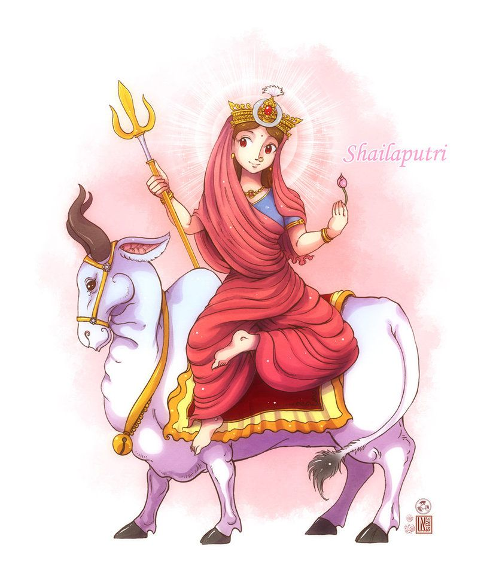
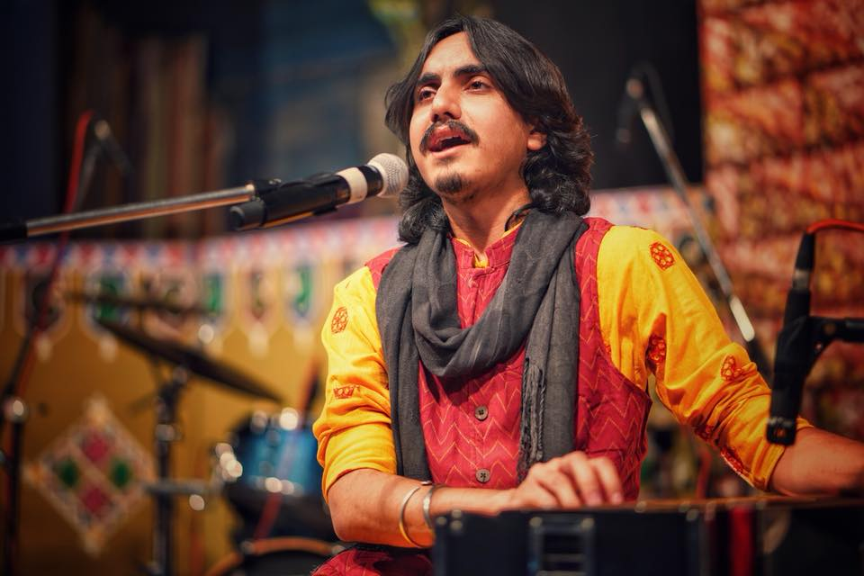
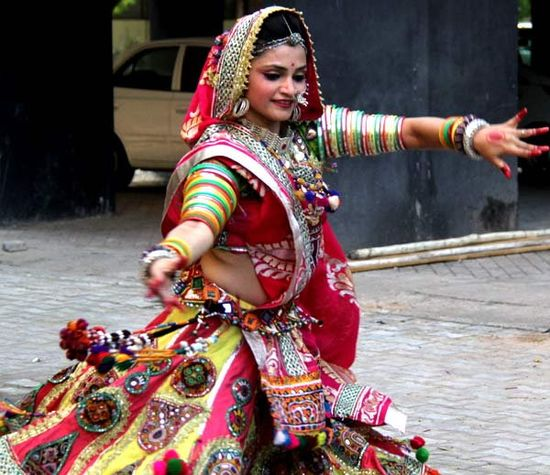

The festival of Navratri begins with the sacred ritual of Ghatastapana,
which is also believed to invoke Goddess Durga. This day signifies the
victory of good over evil. Maa Shailaputri is the first form of Maa Durga.
She is worshipped on this auspicious day followed by Maa Bramhacharini,
Maa Chandraghanta, Maa Kushmanda and other avatars of Goddess Durga. In
the Sanskrit language, Shail means mountain and putri means daughter.
Goddess Shailaputri, the absolute form of Mother Nature, is also known to
be the daughter of Mountains.

History and Origin
According to Hindu beliefs, Goddess Shailaputri is an incarnation of
Devi Sati. In this incarnation, she was the daughter of King Daksha
Prajapati who was the son of Lord Bramha. Devi Sati was married to
Lord Shiva. However, King Daksha was unhappy with this marriage as he
did not consider Lord Shiva to be worthy of marrying a girl who
belongs to an honourable family. The story goes that King Daksha once
invited all Gods to attend a grand religious congregation (Maha
Yagna). Since, he was against the marriage of Lord Shiva and Devi
Sati, he did not invite them. When Devi Sati got to know about this
Maha Yagna, she decided to attend it. Lord Shiva tried explaining that
King Daksha did not want them to be present for the Yagna, but Devi
Sati insisted on attending the ceremony. Lord Shiva understood that
she longed to go home and allowed her to go for the Yagna. But as soon
as Devi Sati reached there, she noticed that none of the relatives
were happy to see her. Apart from her mother, all of Devi Sati’s
sisters and relatives ridiculed her. King Daksha made some derogatory
comments about Lord Shiva and also insulted him in front of all the
Gods. Devi Sati could not bear this insult and immediately jumped into
the sacrificial fire meant for the Maha Yagna and immolated herself.
As soon as this news reached Lord Shiva, he grew angry and immediately
invoked a fearful form – Veerhadra. Lord Shiva proceeded towards
the Maha Yagna and decapitated King Daksha. Later, Lord Vishnu
intervened and King Daksha was brought back to life with a goat’s head
attached to his body. Lord Shiva was still grief-stricken and carried
Devi Sati’s half-burned corpse on his shoulders. He was unable to part
with her and wandered endlessly about the world. Lord Vishnu used his
Sudarshan Chakra to severe Devi Sati’s corpse and parts of her body
fell at different places. These places came to be known as
Shakti-Peethas. In her next birth, Devi Sati was born as the daughter
of the God of Mountains – Himalaya. She was named Shailputri and was
also known as Parvati in this incarnation. In this incarnation, due to
her prolonged path of penance, she came to be known as Maa
Bramhacharini or Goddess Parvati. This time, again, she was married to
Lord Shiva and had two sons – Ganesha and Kartikeya. Being an avatar
of Goddess Durga, Maa Shailaputri is worshipped on the first day of
Navratri. She carries a lotus in one hand, a trident in the other and
uses a bull (Nandi) as her vehicle. Maa Shailaputri is worshipped with
great enthusiasm and it is believed that devotees can lead a happy and
successful life with her blessings.
Event Performer of the day
Aditya Gadhvi
Aditya Gadhvi is a playback singer and lyricist from Gujarat, India. He
has rendered film songs in several Indian languages and has many chart
hits. He is involved in Gujarati film scoring and has released a number
of singles. His recent performance include the Gujarat Titans' anthem
Aava De during the IPL 2023.
He is popular for hits such as 'Sharato Lagu', 'Hellaro' and 'Love Ni
Bhavai' among many others. Bollywood actress Priyanka Chopra has
performed dandiya on Gadhvi's song when he was performing "Dakla" song
on Navratra festival.
list of famous song performing
1] har har mahadev
2] khalasi
3] sapnani rat
4] manda mohi lidha

performing theam for khelaiya : Garba/Ghagra Choli Theme (girl)

It is a combination of the gagra or lehenga (long skirt) and the choli
(blouse), however in contemporary and modern usage lehenga choli is the
more popular and widely accepted term by fashion designers, trend
setters, and boutiques in South Asia, since ghagra is synonymous with
the half-slip worn as an undergarment ...
Garba is a traditional dance performed during Navratri, and dressing up
in colorful and vibrant Ghagra Cholis (long skirts and blouses) is a
common choice. Choose bright and eye-catching colors like red, yellow,
green, and orange.
It is a combination of the gagra or lehenga (long skirt) and the choli
(blouse), however in contemporary and modern usage lehenga choli is the
more popular and widely accepted term by fashion designers, trend
setters, and boutiques in South Asia, since ghagra is synonymous with
the half-slip worn as an undergarment ...
Garba is a traditional dance performed during Navratri, and dressing up
in colorful and vibrant Ghagra Cholis (long skirts and blouses) is a
common choice. Choose bright and eye-catching colors like red, yellow,
green, and orange.